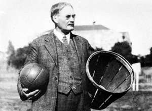

 In 1891, Dr. James Naismith, a Canadian doctor, at what was then McGill University (now Springfield University), devised an entirely new indoor game with the intention of keeping his students fit during the long winters. After rejecting the ideas as too rough or incomplete, he adapted several sports into one unit and wrote simple rules. He placed the basket at a height of 3.05 meters (10 feet). That basket differed from today's in that it had a solid bottom, while today's baskets have a mesh that lets the ball through. While the baskets had a solid bottom, every time a basket was scored, the balls had to be kicked out of the basket. Naismith's new game was very similar to handball, which originated around the same time as basketball, at the end of the 19th century. Women's basketball began in 1892 when Senda Berenson, a physical education teacher, adapted Naismith's rules for women. The first official basketball game was held on January 20, 1892 in the gymnasium of the YMCA. It was played with nine players on a court half as long as today's NBA court. The original name of basketball in English is basketball, and it is a combination of the words basket - basket and ball - ball. The name was suggested to Naismith by one of his students. The game was popular from the very beginning.
The first basketball players were students of the YMCA High School. Later the game spread to the entire USA and Canada. By 1896, there were also numerous women's basketball teams, but rather rough rules and a large crowd diverted basketball from the primary goal of the YMCA, a game that helps students stay in shape. But, in spite of that, before the First World War, numerous amateur associations with amateur clubs were established, namely in the USA.